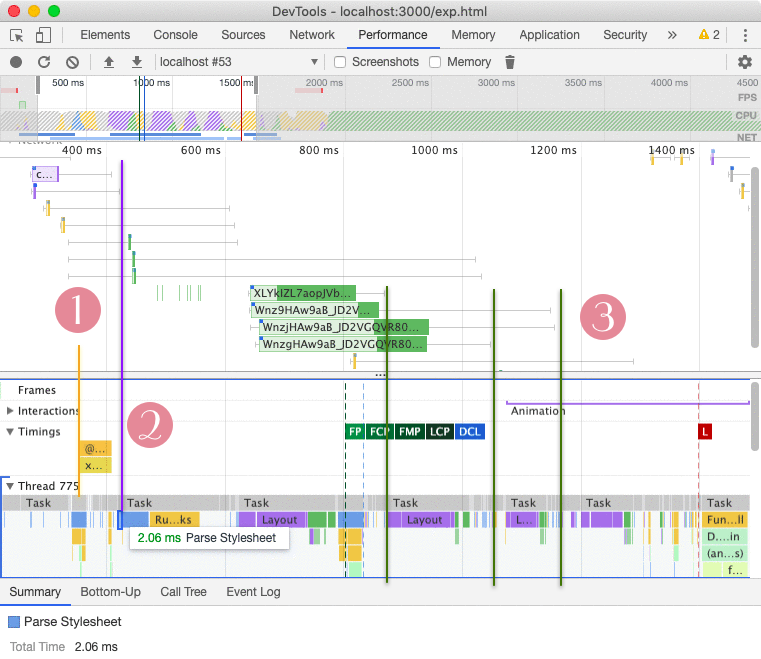
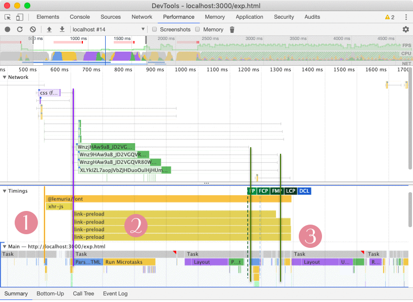

> Part II of Advanced Google Font. Go to Part I: How To Load Google Fonts Asynchronously and Part III: Embedding Critical Path Fonts.

Anton Dmukhovskiy, Senior Software Developer
8 November 2019 Loading sharing buttons...
In the previous part, I've show the theory behind asynchronous web font stylesheet loading and illustrated the process of page loading with experiments around performance measurements. Based on this data, I'll show my technique loading fonts in the most efficient manner. At the end, I'll show how to make embed a font on a web page so that it's immediately used when rendering the page, without a FOUT.
In part I, a number of times we've seen one drawback to preloading web fonts stylesheets dynamically even with the preload link: fonts won't begin to download immediately after the stylesheet is downloaded, but only only at the initial render stage Recalculate styles | Layout, or after it if the stylesheet didn't have time to load before the first render. I've repeated the previous experiment multiple times, and I always see the same result, that the font download happens only at the purple render bar and never before it, even if the stylesheet is ready. Wouldn't it be nice to be able to start downloading fonts as soon as we have the fonts' urls? Plus, we're still to consolidate all reflows. The proposed solution is JavaScript-based:
Let's get to code right away. Here's a simple script to fetch stylesheet, while measuring performance:
The main idea behind the Advanced Google Font strategy is to handle loading of fonts programmatically. By taking control over assets loading process, we'll be able to inject all fonts at once in a so-called fonts flush, thus reducing the number of reflows to just one.
To find out the URLs of fonts, we fetch the stylesheet with a simple XHR request.

/**
* Download a resource with XHR.
* @param {string} address The address to load.
* @param {function(string)} cb The callback to call on complete.
* @param {string} [marker] Performance annotation.
*/
function fetchStylesheet(address, cb, marker = '') {
performance.mark('xhr-start'+marker)
const xhr = new XMLHttpRequest()
xhr.onreadystatechange = () => {
if(xhr.readyState == 4) {
if (xhr.status == 200) {
cb(xhr.responseText)
performance.mark('xhr-end'+marker)
performance.measure('xhr'+marker, 'xhr-start'+marker, 'xhr-end'+marker)
} else {
console.error('Error loading webfont: server responded with code %s at %s',
xhr.status, address)
}
}
}
xhr.open('GET', address)
try {
xhr.send(null)
} catch (err) {
console.error(err)
}
}The standard google fonts stylesheet contains a number of @font-face records with CSS properties. The unicode-range property allows to download fonts only if the page contains characters from that range, and it's annotated just above the record.

/* latin-ext */
@font-face {
font-family: 'Gentium Basic';
font-style: italic;
font-weight: 400;
font-display: swap;
src: local('GentiumBasic-Italic'), url(woff2) format('https://woff2');
unicode-range: U+0100-024F, U+0259, ...etc;
}
/* latin */
@font-face {
font-family: 'Gentium Basic';
font-style: italic;
font-weight: 400;
font-display: swap;
src: local('GentiumBasic-Italic'), url(woff2) format('https://woff2');
unicode-range: U+0000-00FF, U+0131, ...etc;
}Our stylesheet parsing function uses a regex to extract URLs with unicode ranges of fonts, and creates an array like [{ font: 'https://woff2', range: /[regex]/ }] for each font it found in the stylesheet.
The U+0000-00FF,U+0131,... range will become [\u0000-\u00FF\\u0131...] JS regex.
function parseBody(result) {
const re = /url\((.+?)\).*?;\s+unicode-range: (.+?);/g
let ranges = {}
const fonts = []
let a
while((a = re.exec(result))) {
const u = a[1]
const range = a[2]
fonts.push({ url: u, range })
ranges[range] = 1
}
ranges = Object.keys(ranges).reduce((acc, range) => {
const reg = range
.split(/,\s/)
.map((r) => r.replace('U+', '\\u').replace('-', '-\\u'))
.join('').toLowerCase()
acc[range] = new RegExp(`[${reg}]`)
return acc
}, {})
// ...There are 2 scenarios when we'll get the stylesheet ready:
A) after HTML parsing, when body is available. By running the regex against body's text content, we can figure out if we don't use latin-ext on the page, and just pass the unicode range for latin characters. This way, we don't have to download each single font in the stylesheet, wasting data; and
B) prior to HTML parsing, which can happen because there's another stylesheet blocking the render, and/or because the connection is very fast. Here, we wouldn't know the unicode ranges that are present on the page, therefore they have to be supplied as additional information.

// ..
const body = document.body ? document.body.textContent : ''
const validRanges = body ? Object.keys(ranges).reduce((acc, range) => {
// case A) body is loaded, test it against the regex.
const reg = ranges[range]
const valid = reg.test(body)
if (valid) acc[range] = true
return acc
}, {}) : Object.keys(ranges).reduce((acc, range) => {
// case B) body is not available, fallback to supplied ranges.
const valid = range in defaultRanges
if (valid) acc[range] = true
return acc
}, {})
// filter only fonts we need
urls = fonts.filter(({ range }) => {
return range in validRanges
}).map(({ url: u }) => u)
// if ranges are not supplied, and we're in case A, just add the stylesheet.
// we loose the advantage of eliminating continuous reflows due to fonts
// arriving independently at different times.
if (!urls.length) return loadedCb()
// preload fonts via link elements
// each appendChild has a cost, so bundle them into a fragment.
const fragment = document.createDocumentFragment()
urls.forEach((address, i) => {
const link = document.createElement('link')
link.href = address
link.rel = 'preload'
link.as = 'font'
const j = i + 1
performance.mark('link-preload-start'+j)
link.onload = () => loadedCb(j)
link.setAttribute('crossorigin', true)
fragment.appendChild(link)
})
document.head.appendChild(fragment)
}Finally I add some logic to keep track of parallel preloads and to embed the stylesheet when they all arrive, and write the startPreload function to wire all functions up together.
The argument i would not be set if there were no valid URLs to load, e.g., in case B when no unicode ranges were passed, therefore I skip performance measurement there. The measure function will throw runtime error instead of warning, so one should be careful with it.
let FONT_CSS
let urls = []
let loaded = 0
/**
* @param {number} [i] The index of the link
*/
function loadedCb(i) {
if (i) {
performance.mark('link-preload-end'+i)
performance.measure('link-preload', 'link-preload-start'+i, 'link-preload-end'+i)
}
loaded++
if (loaded >= urls.length) {
const style = document.createElement('style')
style.innerHTML = FONT_CSS
document.head.appendChild(style)
performance.mark('agf-end')
performance.measure('@lemuria/font', 'agf-start', 'agf-end')
}
}
// the entry main: fetch CSS and call parseBody,
// which will call loadedCb for each font.
function startPreload(linkEl, marker = 'link') {
const href = linkEl.href
fetchStylesheet(href, (res) => {
FONT_CSS = res
parseBody(FONT_CSS)
}, '-' + marker)
}
// kick in advanced google font preloading!
startPreload({ href: FONT }, 'js')I could have used the fetch instead of XHR since it's 2019, however I would need to add a polyfill and transpile async code. There's no performance difference between fetch and XMLHttpRequest APIs. One observation, is that with fetch, data could be streamed, so if the response arrived in chunks, I could extract fonts as they come, but because the stylesheet is so small (< 1kb), streaming is unnecessary. I've made a package called @lemuria/font1.0.4 with this code which I ran through Google Closure Compiler, so let's update our page:
<head>
<link rel="dns-prefetch" href="//fonts.googleapis.com">
<link rel="preconnect" href="https://fonts.gstatic.com" crossorigin>
<link rel="preload" href="https://fonts.googleapis.com/css?display=swap&family=Gentium+Basic:400,400i,700|Limelight" as="fetch">
<script>
(function(){window["@lemuria/font"]=function(q,k){function x(a){for(var f=/url\((.+?)\).*?;\s+unicode-range: (.+?);/g,b={},d=[],h;h=f.exec(a);){var r=h[2];d.push({url:h[1],a:r});b[r]=1}b=Object.keys(b).reduce(function(c,e){var g=e.split(/,\s/).map(function(l){return l.replace("U+","\\u").replace("-","-\\u")}).join("").toLowerCase();c[e]=new RegExp("["+g+"]");return c},{});var t=document.body?document.body.textContent:"",y=t?Object.keys(b).reduce(function(c,e){b[e].test(t)&&(c[e]=!0);return c},{}):Object.keys(b).reduce(function(c,
e){e in k&&(c[e]=!0);return c},{});m=d.filter(function(c){return c.a in y}).map(function(c){return c.url});if(!m.length)return u();var v=document.createDocumentFragment();m.forEach(function(c,e){var g=document.createElement("link");g.href=c;g.rel="preload";g.as="font";var l=e+1;performance.mark("link-preload-start"+l);g.onload=function(){return u(l)};g.setAttribute("crossorigin",!0);v.appendChild(g)});document.head.appendChild(v)}k=void 0===k?{}:k;var n=document.createElement("link");if(function(a,
f){if(!a||!a.supports)return!1;try{return a.supports(f)}catch(b){return!1}}(n.relList,"preload")){var z=function(a,f,b){b=void 0===b?"":b;performance.mark("xhr-start"+b);var d=new XMLHttpRequest;d.onreadystatechange=function(){4==d.readyState&&(200==d.status?(f(d.responseText),performance.mark("xhr-end"+b),performance.measure("xhr"+b,"xhr-start"+b,"xhr-end"+b)):console.error("Error loading webfont: server responded with code %s at %s",d.status,a))};d.open("GET",a);try{d.send(null)}catch(h){console.error(h)}};
performance.mark("agf-start");var p;(function(a,f){z(a.href,function(b){p=b;x(p)},"-"+(void 0===f?"link":f))})({href:q},"js");var m=[],w=0,u=function(a){a&&(performance.mark("link-preload-end"+a),performance.measure("link-preload","link-preload-start"+a,"link-preload-end"+a));w++;w>=m.length&&(a=document.createElement("style"),a.innerHTML=p,document.head.appendChild(a),performance.mark("agf-end"),performance.measure("@lemuria/font","agf-start","agf-end"))}}else n.rel="stylesheet",n.href=q,document.head.appendChild(n)};}).call(this);
window['@lemuria/font']
('https://fonts.googleapis.com/css?display=swap&family=Gentium+Basic:400,400i,700|Limelight')
</script>
</head>I've left plenty of performance markers, but there's a version that doesn't have them for smaller size. What does the resulting timeline look like? Have we solved the problem of throttling fonts' reflows?


OK Google, we've achieved the maximum optimisation of your fonts consisting of gathering all fonts to flush them at once together with the stylesheet to have only a single reflow. Let's just see what if there's a render blocking resource, such as an external CSS that would give us some additional time to fetch the web font stylesheet:

In this experiment, instead of inlining the page's style, I added a link to it, so that the browser had to download it. Although such download happens really quickly, the page nevertheless is slowed down by much more than just the download time. Unlike in the previous case, now when the @lemuria/font function has fetched the stylesheet and calls the XHR callback, the body is NOT yet available because the parsing has not started. This shows that it's not just the download job that increases the start up time for external stylesheets, but their loading time also: total: 84.12 ms (15.12 ms network transfer + 69.01 ms resource loading) which would have been 0ms had the stylesheet been embedded and present for parsing immediately.
Again, this is my 2008 slow CPU MacBook but the idea is that when executing a script in the head, the body is not yet available since no parsing has begun. But the experiment above clearly shows that even though the body is not ready, we still could have had downloaded an external resource, for example a style, as browsers are really serious about such critical path assets due to the fact that they are REQUIRED to paint ANY content on a page. In the case of advanced google font technique, even though the preload is defined as "fetch", it's still considered to be a CSS and has the highest download priority. In fact, it downloads so fast, the browser hasn't even begun properly parsing the page! In spite that it's an old laptop I was testing it on, Lighthouse does apply CPU throttling when producing reports, and so probably does Google for its page speed ranking measurements, so such experiments are worthwhile investments of time into improving the web development skill and understanding page speed optimisation principles. If your performance tab in the dev console is covered with cobweb, I'd suggest it's time to acknowledge its importance in today's competitive world of front-end development requiring high competence.
What the experiment showed was that because there were no default unicode-ranges to apply, the stylesheet was just embedded into the DOM as a fallback, so that the font flushing method didn't work. I'll show how to use unicode ranges in a sec, let's just take a short break.

From looking at the previous graph, for a scary moment I thought that I might be giving wrong advice when saying to append a link tag dynamically into the head, and it will actually block the page from rendering. This is because on the previous Fig 2 (don't be afraid to click, we have a user-friendly scroll with a back button), there are some gaps in the timeline after the web font stylesheet is inserted, but before the external CSS is parsed, that could indicate that the page was render-blocked.
However, it's not the case as shown belowon the left: the parse HTML goes in parallel with stylesheet loading. My interpretation of those gaps in past is that the browser has to pause to parse the external style, allowing some async JS to report to the main thread via callbacks (e.g., on Fig 2, XHR is completed quicker compared to the Fig 1, where it had to wait for the main thread to unblock since there were no gaps).

I mean, my explanation around "pauses" is probably not 100% accurate to what's going internally, but I think it gives a picture that WITHOUT external resources the parsing proceeds to rendering in one continuous "stroke", whereas WITH external styles, there will be gaps. Codewise, essentially all I've done is added an external stylesheet dynamically, but throttled it server-side with a middleware function. Because the page continued to render, it's safe to say that adding a link with JS in the head will not block the main thread.
<head>
<link rel="preload" href="/throttle.css" as="style">
<script>
const link = document.createElement('link')
link.href = '/throttle.css'
link.rel = 'stylesheet'
performance.mark('add-stylesheet')
document.head.appendChild(link)
link.onload = () => {
performance.measure('stylesheet-onload', 'add-stylesheet');
}
</script>
</head>// Koa middleware
async function throttle(ctx, next){
if (ctx.path == '/throttle.css') {
await new Promise(r => setTimeout(r, 500))
ctx.type = 'text/css'
ctx.body = ''
}
await next()
}If you're a fan of Koa like I am, have a look at our Koa Fork, @Goa/koa1.1.3 which is 100% Koa compiled and optimised with Google Closure Compiler to just one dependency (which is mime-db). Want to find our more about revolutionary way of compiling Node.JS package from Art Deco? Be sure to subscribe to receive info about new age methods of modern web development.

So finally, let me show a case with an external stylesheet, and with a unicode-range. The unicode-range can be looked up in the Google's servers response, but I'm quite sure they are pretty static so you wouldn't have to do it often (but keep an eye out for them). The range must be set as a string key without the last ;. Multiple ranges can be specified for fonts targeting different language sets, but I'm just using the latin one here, because there are no special characters on the page that would require the extended version.
<head>
<link rel="preload" crossorigin as="fetch"
href="https://fonts.googleapis.com/css?display=swap&family=Gentium+Basic:400,400i,700|Limelight">
<script>
/* @lemuria/font source code goes here ... */
var range = 'U+0000-00FF, U+0131, U+0152-0153, U+02BB-02BC, U+02C6, U+02DA, U+02DC, U+2000-206F, ' +
'U+2074, U+20AC, U+2122, U+2191, U+2193, U+2212, U+2215, U+FEFF, U+FFFD'
window['@lemuria/font']
('https://fonts.googleapis.com/css?display=swap&family=Gentium+Basic:400,400i,700|Limelight', {
[range]: true, // latin range
})
</script>
</head>
Cool, I think we've optimised as much as possible out of Google Fonts. The final version enables to insert the stylesheet before the initial layout, and also downloads fonts in parallel to the main thread which is busy rendering. Practically, this is only possible if the device is pretty slow and/or there are render blocking resources that will postpone the parsing for some time long enough for the web font stylesheet preload to complete, but nonetheless this technique is still applicable, in particular to heavier pages that require more time for parsing and initial / following layouts (whereas before, there could be 4 reflows - 1 for stylesheet injection and 3 for each of the fonts arriving independently, now it's only one).

Google Fonts are great because it's really easy to embed them and the service provides a variety of good-looking web fonts. The standard sync loading with a simple link tag, however, will lock the main thread and not prevent the page (even HTML won't start parsing) which we would like to avoid. Moreover, fonts will load independently, and each time they will cause a reflow of the page, which slows down the L event delivery and frustrates the user. In summary, we've gone through the following stages for optimisation from the sync loading:

Instead of adding a link tag in the markup, we add a simple script to create the link dynamically. This technique allows to transform sync render-blocking loading of resources into async non-blocking loading, and eliminates the Lighthouse warning. We also add a preload link so that the resource begins to download immediately rather than waiting for the script to execute.
We've also looked at another method when instead of a script tag, the onload attribute on the preload link is used to upgrade the rel from preload to stylesheet, however as I've shown, this has a disadvantage that if the stylesheet arrives after the initial render, it will cause an expensive reflow, despite the fact that fonts are not even loaded. Therefore I suggest it's better to use the traditional script element right under the preload link.
Although async loading better than sync one, it's still not perfect, because we still have multiple reflows due to independent font loading. I propose a solution where an Ajax request is made to fetch the stylesheet, extract urls to fonts, preload them, and once they are all ready, embed the stylesheet into DOM.

Any external CSS will postpone the parsing of HTML until it's received, but not only for the length of its download time, but for the duration of its loading time, which might be much longer than the download one. Therefore when we're talking about maximum optimisation, such as for a landing page of a product, we might want to embed the full stylesheet onto the page so that we don't have to wait for it. The browser treats this case differently and the loading pattern is continuous, i.e., start of parsing leads to layout without any gaps. However, if we have a web portal with multiple pages that share same styles, like a forum, it might not be feasible to embed CSS onto each page. Here, we're not that concerned with making an impression on the user with lightning-fast pages, but just want to deliver content. These are 2 broad cases that each deserving its own treatment.
When there are no external CSS, our script will begin to download XHR, but will probably have to wait until the initial rendering is done to parse it and begin to download fonts. When there are external CSS that blocked the page, the script might get a chance to parse the stylesheet, but it won't have information about the body's content to correctly apply unicode-range, therefore we can supply that info manually to prevent unused fonts from extended ranges from downloading. In the latter case, we will be able to download fonts in parallel to the main thread doing the layout job, and apply the style right after the thread is freed, that is after the DCL event. This scenario is when the loading is the fastest.
There might be some disadvantages to the method:
On the other hand, the @lemuria/font script works as a polyfill for display:swap which is not available for Edge. However, because it embeds fonts with preload links, it will not work on the IE/Edge12-16/Firefox. I thought about downloading fonts with XHR to prime the network cache, however after I downloaded them this way, and then injected the web font stylesheet referencing them, they were re-downloaded. A solution to this would be to embed fonts into the webpage with data:application/font url, however that would trigger data: string parsing and slow down the page.
@Lemuria/font1.0.4 package is available from NPM, and exports functions that could be added to a server-side rendered webpage. The source code of the function for manual injection can be copied from Github. The check for preload support is done the following way,
 uggested by preload
uggested by preload
function DOMTokenListSupports(tokenList, token) {
if (!tokenList || !tokenList.supports) {
return false
} try { return tokenList.supports(token) } catch (e) {
return false }
}
const link = document.createElement('link')
const linkSupportsPreload = DOMTokenListSupports(link.relList, 'preload')

I should mention that the best possible course of action would of course be to preload fonts using a preload link without any scripting. However, that's a different context entirely since this article focuses specifically on Google Fonts optimisation. Their servers will return different urls for different browsers, therefore we can't just copy and paste them in the preload link, additionally their fonts evolve and change versions. The advanced google font loading solution is the simplest scripting solution to kicking off font preload as soon as possible, and eliminating multiple render blocks.
Moreover, in the previous article as well as here I've seen results like in Fig 2 which showed that fonts didn't begin to download before the first Recalculate Styles even if the stylesheet was downloaded alright. The last experiment was to embed the stylesheet manually with a <style>/* contents of google font stylesheet */</style> tag onto the page and see its performance. There are no external resources and the page load should proceed seamlessly from parsing to layout.
<head>
<link rel="dns-prefetch" href="//fonts.googleapis.com">
<link rel="preconnect" href="https://fonts.gstatic.com" crossorigin>
<style>
/* latin-ext */
@font-face {
font-family: 'Gentium Basic';
font-style: italic;
font-weight: 400;
font-display: swap;
src: local('Gentium Basic Italic'), local('GentiumBasic-Italic'), url(https://fonts.gstatic.com/s/gentiumbasic/v11/WnzjHAw9aB_JD2VGQVR80We3LAi5hBo7QoCBZCxP.woff2) format('woff2');
unicode-range: U+0100-024F, U+0259, U+1E00-1EFF, U+2020, U+20A0-20AB, U+20AD-20CF, U+2113, U+2C60-2C7F, U+A720-A7FF;
}
/* etc */
</style>

The performance graph clearly shows that although urls to fonts are there on the page, they don't begin to download prior to the first style calculation. If people were coming for a job interview at Art Deco™, I would potentially ask them this question to find out if they read my article ;) Apart from this interesting observation, the conclusion is that the Advanced Google Font method I've introduced here is even better than what the browser can offer natively, because it's able to begin to download fonts even before parsing starts. It does it by extracting urls from the stylesheet, if it arrives quickly enough (see case B), as proven on Fig 4.

Loading sharing buttons...